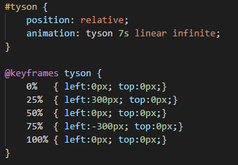

Good morning! For this weeks blog I decided to research animations, as this is a required element of the first project. CSS makes this (as it does most things) pretty easy.
There are various animation properties, such as animation-name, animation-duration, animation-timing-function, and animation-iteration-count, and more. Most of these properties
are pretty self explanatory, besides the name. The name is what is referenced by the @keyframes rule, which actually sets the translations of the image. All of these properties
can be set individually, or the can be set in one line by simply using the animation, as I did and can be seen below.
As you can see, the animation properties are set in one line. The properties being set are: animation-name, animation-duration, animation-timing-function, and animation-iteration-count respectively.
I then use the @keyframes rule to set where the image will be at what stage of the animation, by moving the left side positive 300px the image translates to the right, and then by going
back to 0 its at its origin, and then -300px it moves it to the left, and finally finishing where it started to create a looping effect. The guide I used for this blog was
w3schools
